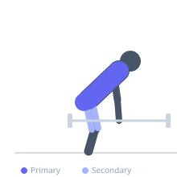
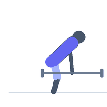

Exercise guide / Rack Pull
Rack Pull
The rack pull is a partial-range deadlift variation starting with the bar elevated on safety pins inside a power rack, typically at or just below the knee. The reduced range of motion allows the lifter to overload the upper portion of the deadlift pattern, emphasizing the erector spinae, upper back, and trapezius with loads greater than a full conventional deadlift. It is commonly used to address weaknesses in the lockout portion of the deadlift.
Primary muscles
erector spinae
gluteus maximus
trapezius upper
Secondary muscles
trapezius middle
biceps femoris long head
rectus femoris
Stabilizers
transverse abdominis
flexor carpi radialis
Equipment
Standard Barbell
Power Rack (Squat Cage)
Optional
Lifting Straps


Starting position
- Set the safety pins inside a power rack so the bar rests at knee height or just below. Load the barbell heavier than your conventional deadlift working weight. Stand with feet hip-width apart, the bar over mid-foot.
Setup
- Set rack pin height to place the bar at or just below knee level. Use a standard barbell and load it heavier than you would for a full deadlift. Use a double overhand or mixed grip.
Steps
- Step 1: Hinge at the hips and grasp the bar with the chosen grip. Set the back — neutral spine, braced core.
- Step 2: Take a large breath into the belly, brace the core hard.
- Step 3: Drive through the floor with the legs while pulling the bar up the shins and thighs.
- Step 4: Lock out at the top by driving the hips forward and squeezing the glutes.
- Step 5: Hinge back to lower the bar to the pins under full control. Reset and repeat.
Coaching cues
- Push the floor away, do not think of it as a pure pull
- Keep the bar dragging up the thighs
- Squeeze the glutes to lock out — do not lean back
Breathing
- Inhale and brace before each rep. Exhale at the top after lockout.
Range of motion
- From pin height (knee level) to full lockout. This is intentionally partial range.
Tempo
- Controlled concentric, full lockout hold for 1s, controlled 2–3s eccentric to pins.
Common mistakes
- Rounding the upper back under the heavy load — prioritize a stiff, braced torso
- Hyperextending at lockout rather than achieving a neutral spine with glute contraction
- Letting the bar drift away from the body during the pull
Safety
- Use a controlled negative — do not drop the bar onto the pins from height unless using bumper plates and appropriate flooring
- Rack pulls with very heavy loads demand excellent core bracing — do not perform when fatigued
Training
- strength: 1–5 reps
- hypertrophy: 5–8 reps
- strength: 4–6 sets
- hypertrophy: 3–5 sets
- Rest: {'strength': 240, 'hypertrophy': 150}